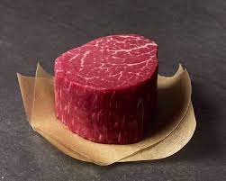

Home
Fillet Minion Recipe

This is Genuinely the best Fillet Minion recipe of all time. If you
genuinely want an amazing steak, then cook this fr!
Ingredients
- Fillet Minion
- Lemon Pepper
- Gralic Powder
- Onion Powder
- Ground Black Pepper
- Green Onions
- Salt
- Bacon
Directions
- Genuinely whip up da sauce.
- Genuinely season da beef with lemon pepper, garlic powder, onion powder,
salt, and pepper, then set aside to marinate.
- Genuinely place bacon in skillet over medium heat and cook while stirring
until evenly browned (about 10 minutes) then drain on paper towel-lined plate.
- Genuinely preheat grill on medium-high heat and lightly grease with cooking spray.
- Genuinely cook steaks on da grill untill they lowkey reddish-pink and juicy in the center
which should take like 3-5 minutes per side.
- Genuinely serve steaks with sauce of your choice and top it off with bacon and green onion.